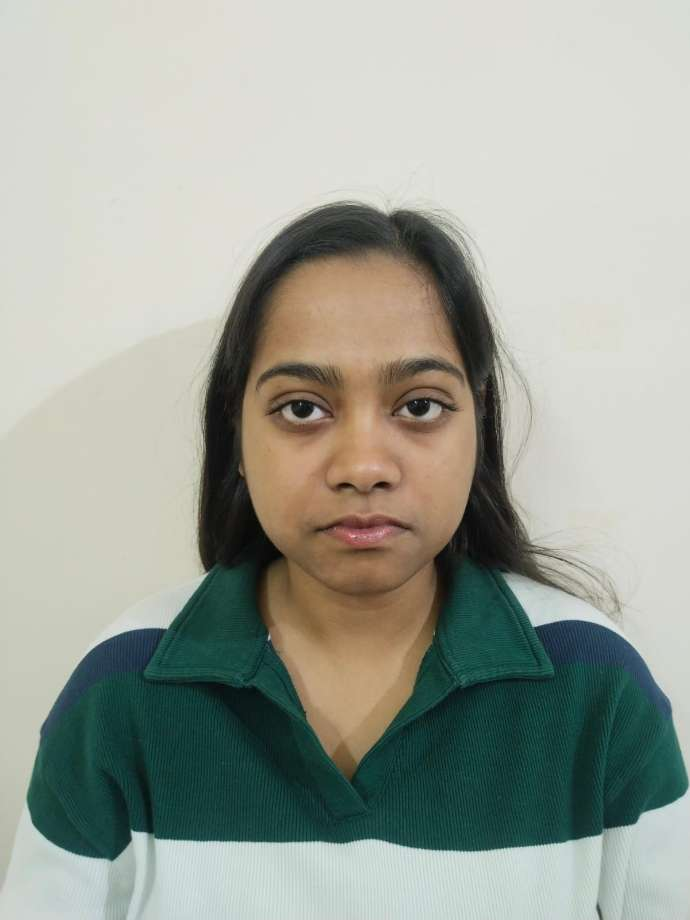

Programming
C++ · Java · Python
B.Tech CSE student at NERIST, interested in Artificial Intelligence, Machine Learning, Natural Language Processing and Large Language Models.

01 / ABOUT
I'm a motivated Computer Science student who enjoys exploring how intelligent systems can solve practical problems.
My interests include Artificial Intelligence, Machine Learning, Natural Language Processing and Large Language Models. I enjoy learning through research, hands-on projects and collaborative work, and I'm keen to keep growing in AI-driven technologies.
02 / TOOLKIT
A snapshot of the tools and foundations listed in my resume.
C++ · Java · Python
MySQL · NumPy · Pandas
NLP · Data preprocessing · LLMs
HTML · CSS
Discrete mathematics · Probability & statistics · Linear and logistic regression
Data structures & algorithms · Operating systems · DBMS
03 / JOURNEY
Academic training, internships and workshops.
Machine translation of legal documents.
Explored AI, student career pathways and ROS; conducted analysis on face recognition using ML and executed deep-learning code using transfer-learning models.
Foundation-level learning in AI applications.
Basics of Python and AI.
Coursework in ethical hacking.
Workshop exposure to cybersecurity topics and tools, including Flipper Zero.
04 / SELECTED WORK
Selected academic and practical work. Project links can be added as repositories become public.
English-to-Assamese legal document translation using a fine-tuned NLLB transformer model. Work includes dataset preparation, preprocessing and model fine-tuning.
Research-focused work on recognising activities in multi-resident environments using ambient sensor data and activity-recognition datasets.
A Flutter application concept focused on emergency support, GPS location sharing and contacting saved emergency contacts.
Note: Add repository links, screenshots and measured results after confirming what is ready to share publicly.
05 / EDUCATION
B.Tech · Computer Science and Engineering
Currently pursuing 7th semester · CGPA: 8.95 / 10.00 · 6th-semester GPA: 9.00 / 10.00
Nirjuli, Arunachal Pradesh, IndiaClass XII · Science (PCM) · 74.2%
Silchar, Assam, IndiaMatriculation · 90.8%
Silchar, Assam, India06 / RECOGNITION
Academic excellence in the CBSE Matriculation Examination, 2020–2021.
Received three scholarships in recognition of academic performance.
07 / CONTACT
Interested in AI, ML, NLP, research opportunities or meaningful collaborations? Feel free to reach out.
simranghosh479@gmail.com ↗